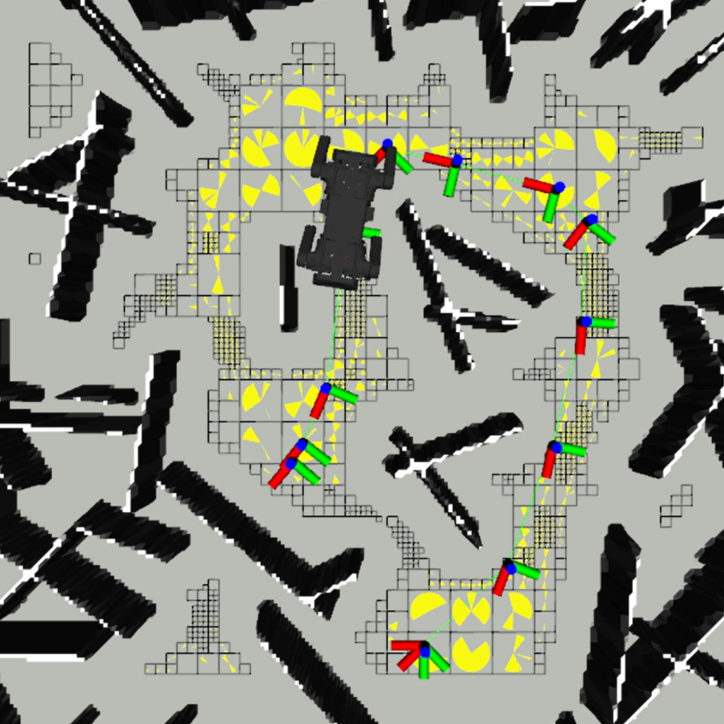

|
Yeongwoo Son
Hello! I’m a Ph.D. student at the Robotics Innovatory, Sungkyunkwan University, under the supervision of Prof. Hyouk Ryeol Choi.
|
Research |

|
Safe Navigation for Quadruped Robots in 3D Cluttered Environments via Rotatable Area
Yeongwoo Son, Hyunyong Lee, Hansol Kang, Jiman Park, Seongwon Nam, Jaeyoung Oh, Bumsu Yi, Bogeun Kim, Daegeun Song, Hyeonwoo Yu, Hyouk Ryeol Choi†, TBD, 2025 TBD |
|  |
RoA-Planner: Rotatable Area-based Path Planner in Dense Spaces
Yeongwoo Son, Hyunyong Lee, Hansol Kang, Jiman Park, Seongwon Nam, Jaeyoung Oh, Bumsu Yi, Junha Song, Sooyeon Choi, Bogeun Kim, Daegeun Song, Hyouk Ryeol Choi† Transactions on Automation Science and Engieering (T-ASE), 2025 project page / paper / video Path planner using Rotatable Area, which represents a range of heading angles where the robot can rotate without colliding with obstacles. |
Competition |

|
POSCO Industrial AI-Robot Challenge 2025
Yeongwoo Son, Hansol Kang, Jaeyoung Oh, Bumsu Yi, Daegeol Ko, Seongbo Ha, Jaehyuk Hur project page 🥇 1st Place A competition, organized by POSCO, evaluating the autonomous walking and mission-performing capabilities of quadruped robots in an industrial site replicating the POSCO steelworks. |